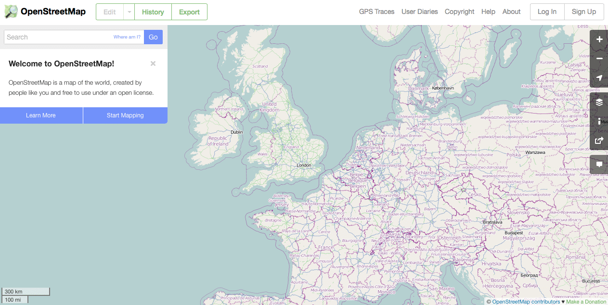
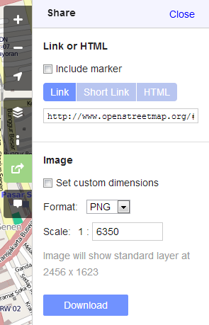
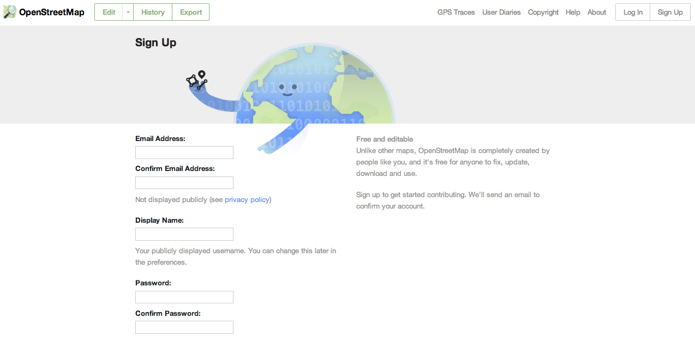

Module 2: Working with OSM¶
Learning Objectives
Visit OpenStreetMap website
Navigate map on OSM website
Save an image from OSM
Register an OSM account
Edit the OSM map
Save edits
In this module we will learn step-by-step how to navigate the OpenStreetMap website, view and print maps, and sign up for a user account. After you have your own username and password, you will be able to add your first points to the map.
1. The OpenStreetMap website¶
Be sure that your computer is on and you are connected to the internet.
Open your web browser - Firefox, Chrome, Opera, or Internet Explorer.
In the address bar at the top of the window, enter the following text: www.openstreetmap.org
When the page has finished loading, it should look something like this:
3. Saving an image of the map¶
To save an image from OSM that you can easily print, follow these instructions:
Click the Share button on the right side of the map.
Options appear which look like this:
In the Image section, check the box next to Set custom dimensions to manually specify the extent of the area for download. Drag the box which appears to the area you would like to get as an image file.
Set the format to PNG, JPEG, SVG or PDF format according to your preference.
You may enter a scale in the next box. The larger the scale (meaning a smaller number), the larger the image size will be. Scale is a ratio. For example, entering 5000 here means that objects on the map will be 1/5000th the size that they are in real life.
Click the Download button. The image will be created, downloaded and saved to your computer.
Open the downloaded file. It can be printed by going to , after you connect your computer to a printer.
4. Creating an OpenStreetMap account¶
Now that we have seen the website, we must create an OSM account so we can start mapping.
Return to the OSM website. Click Sign Up in the top right corner of the page.
You should see a new page that looks like this:
There are five boxes on this page that you need to fill in to register an account with OSM.
Enter your email address in the first two boxes. You should enter the same email address in both boxes. Later, you will need to open your email to confirm your account with OSM.
In the third box, enter the username that you would like to have. You will not be able to choose a username that someone else has chosen before, so it should be creative. If you try to enter something simple, like your first name, it is likely that someone has already claimed that name.
Enter a new password in the fourth and fifth boxes. Enter the same password in both boxes. It does not need to be the same as the password for your email.
You will need to remember your user name and your password so that you can login later.
After completing all the boxes, click Continue at the bottom of the page.
If there are any problems, an error message may pop up. Check to make sure that your email is the same in the first to boxes, and your password is the same in the bottom two boxes. If the third box is highlighted red, it means that someone else has already chosen your username, and you should try a different name.
Open a separate window or tab in your internet browser, and navigate to your email. Common email sites are mail.yahoo.com and gmail.com.
Enter your email address and your email password to open your email. Note that this is not the same as your OSM username and password.
If everything was successful with your registration, you should see an email from OSM in your inbox. Open the email. It should look like the image below. Click on the link that is identified below:
{kind=link}
A new tab or window will open. If everything went well, you should have an OSM account!
On the OSM page, click Log In in the top right corner. Enter your OSM username and password and press Enter. You should now be logged in. You will see your username in the upper right corner of the page.
5. Adding your first points¶
Now that you are logged in with your username on the OSM website, you can add your first point to the map.
Move the map to a place that you know very well, such as your town or village.
Zoom in to a place where you would like to add a point to the map.
Just above the map on the left, there is a button marked Edit. Click on the arrow next to it to open a drop-down menu.
Click Edit with iD (in-browser editor)
The online editor for OSM should open. For a tour of the editor, click Start the Walkthrough. To begin editing, click Edit Now.
Add a point to the map by clicking Point at the top, and then clicking a location on the map. Select the type of location from the menu on the left and add any other information that you know. If you are satisfied that the information is correct, click Save at the top.
Note
If you are not sure about the accuracy of the point(s) you add, don’t click Save! Play around with the iD editor, but don’t save your changes.